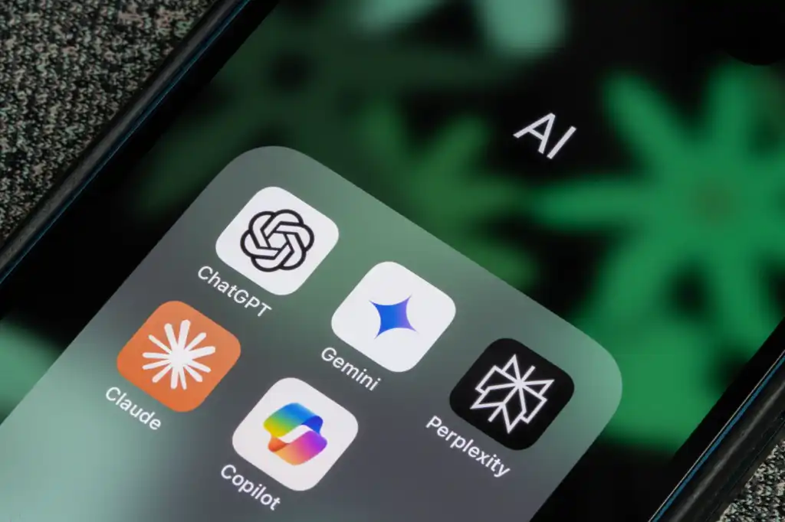
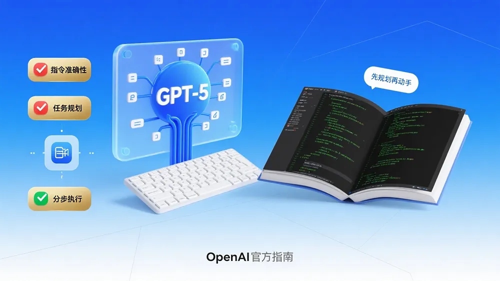
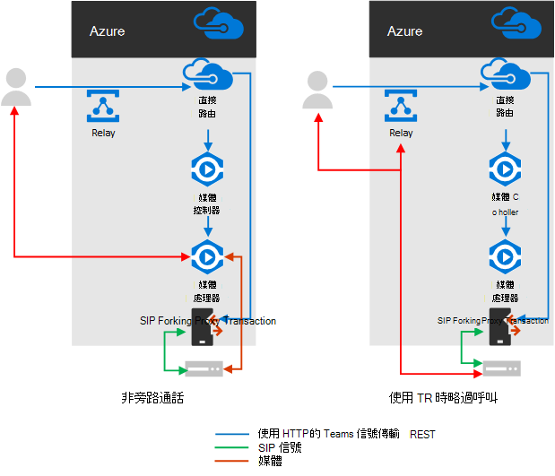
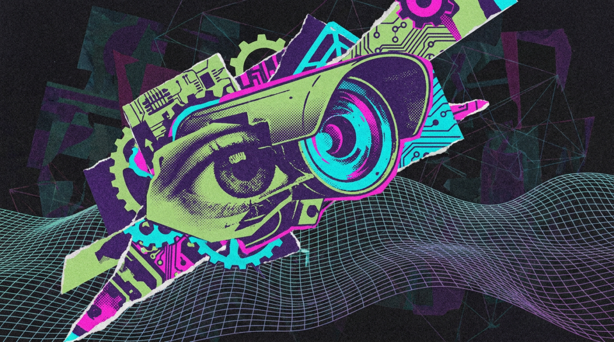
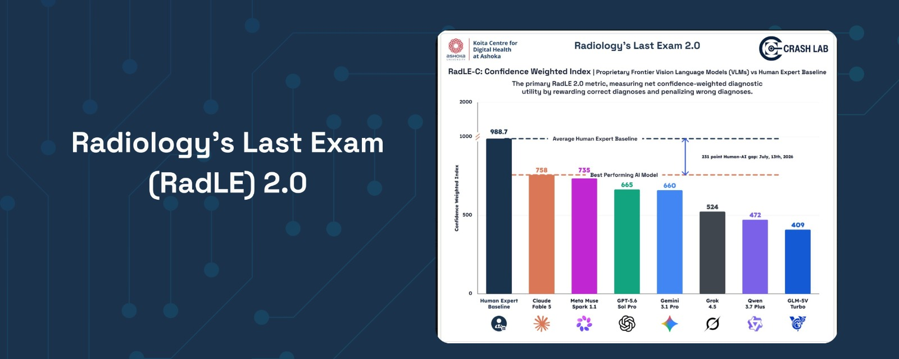

Janet 快车箱
AI Daily Briefing
2026-07-20
VOL 293
读者，早。
这对中国创作者和中小团队很现实：开放模型会继续压低高频任务的心理价位，但它处理不了 GPU、稳定性和运维；闭源模型会继续守住困难推理，同时也会被政府、平台和预算系统层层过滤。接下来该盯的，是每个平台把“可用”改写成什么条件。

AI Weekly 7 月 19 日追踪到，Moonshot 在 X 上称 Kimi K3 收到的需求远超预期，过去 48 小时的使用把 GPU 推近容量上限，因此暂时暂停新订阅，优先保护现有订阅用户并补充 GPU 容量。这件事发生在 Kimi K3 发布后不久，也给“开放权重免费冲击闭源 API”的叙事补了一张资源账单。

Computerworld 报道，欧洲委员会依据 Digital Markets Act 对 Google 作出两项约束性决定：Android 需要向 Gemini 之外的 AI assistants 开放系统和应用服务能力，Google 也需要向竞争对手共享部分搜索数据。Google 反击称这些要求可能削弱隐私和安全护栏；安全从业者则提醒，多 AI assistant 拿到系统级权限后，企业移动设备管理要重新定义风险。

AI Weekly 引述 CNBC 7 月 19 日报道，特朗普政府正在决定哪些伙伴可以访问 OpenAI 和 Anthropic 的前沿模型，把监管触角从网络安全清算机制扩展到实验室原本自行管理的客户分发。报道提到 Anthropic 的 Glasswing、OpenAI 的 Daybreak 伙伴名单都需要明确政府批准；白宫称参与是自愿的，但此前 Fable 5、Mythos 5 和 GPT-5.6 Sol 都已经经历过准入限制。
Axios 7 月 19 日报道，美国国防部副部长 Emil Michael 在 X 上公开攻击 OpenAI 战略未来负责人 Dean Ball，争论焦点是美国政府如何处理中国 AI 模型带来的竞争和安全问题。Ball 曾参与特朗普政府 AI Action Plan 架构，如今进入 OpenAI；Axios 指出，这场公开冲突可能让 OpenAI 与美国政府关系变得更复杂。

AI Weekly 汇总 Bloomberg 7 月 19 日报道，ZTE 旗下 Nubia 在 WAIC 2026 展示 NaviX Ultra，外界称其为围绕 ByteDance Doubao voice agent 设计的 agentic AI smartphone。报道称这台手机取消传统 home screen 和 app grid，改用专用侧边按键唤起 Doubao，并准备进入量产，但完整规格和价格仍未公布。

Build Fast with AI 7 月 20 日梳理称，Kimi K3 的开放权重承诺日期是 7 月 27 日，距离 API 发布约 11 天；同一周 DeepSeek V4 stable 预计在 7 月 24 日到来。报道把这称为本月最集中的 open-weight release window，并提醒企业用真实工作负载比较 K3、DeepSeek V4 和闭源模型，别只看榜单。
Build Fast with AI 7 月 20 日关注到，Claude Fable 5 的免费访问窗口将在美国太平洋时间 7 月 19 日 23:59 结束，Anthropic 接下来可能延长、转向 credits，或用新模型重置叙事。这个节点刚好撞上 Kimi K3 和 DeepSeek 的开放模型攻势，让付费旗舰模型的价格理由被重新审视。

OpenAI 的 GPT-5.6 页面显示，新一代模型覆盖 Sol、Terra、Luna 三个层级，并已在 ChatGPT、Codex 和 API 中逐步开放。OpenAI 强调其在 agentic browsing、computer use、cybersecurity 和 knowledge work 上的进展，并给出 Sol 每百万输入 token 5 美元、输出 token 30 美元等 API 定价。

Build Fast with AI 7 月 20 日汇总称，Gemini 3.5 Pro 据报第三次错过内部目标，问题集中在 coding 和 complex reasoning；Google 同期又遇到 EU Android 与搜索数据开放要求，Alphabet 股价承压。报道同时提醒，Google 本周仍有 Gemini Notebook 云端执行环境和 AI Mode app integrations 等实际产品进展。

TechRepublic 7 月 17 日报道，Microsoft 据称正在准备 Project Perception，用 Anthropic、OpenAI 和 Microsoft 多个模型扫描、识别并修复企业漏洞，定位为比 Anthropic Mythos 更低成本的 AI security tool。关键设计是按任务路由模型：普通 inventory、log parsing 和初筛交给便宜模型，复杂 exploit chain 和修复计划才调用前沿模型。

The Decoder 7 月 20 日报道，Epoch AI 测试 Pangram、GPTZero 和 Originality.ai 等 AI text detectors 后发现，在普通条件下检测器表现接近完美，但当模型被要求模仿特定作者风格时，平均约 13% 的 AI 生成段落会漏检；Epoch 自身数据还指出，科学写作场景的漏检比例更高。

CRASH Lab 发布 Radiology's Last Exam 2.0 technical report，称新版 benchmark 从单纯准确率转向 uncertainty-aware autonomous diagnosis。团队回顾 RadLE 1.0 时指出，专家放射科医生约 83%，最佳 frontier AI 约 30%；随后模型进步很快，但 2.0 更关心模型是否会在错误诊断上保持过度自信。
SAP 7 月 17 日宣布完成收购 Prior Labs，这家公司专注 Tabular Foundation Models。SAP 称 Prior Labs 将继续独立运营，SAP 承诺未来四年投入超过 10 亿欧元，把它扩展为面向企业结构化数据的 frontier AI lab。这个方向避开了 chatbot 叙事，直接瞄准表格、账本、库存和交易记录。

Build Fast with AI 7 月 20 日梳理称，Oracle 为 AI data center buildout 削减至多 3 万个岗位，预计释放 80 亿至 100 亿美元年度现金流；其 AI 基建押注与 OpenAI、SoftBank 的 Stargate 计划和一份 3000 亿美元、五年期 OpenAI 云合同绑定。报道提醒，这让 AI 基建的资本来源变得异常可见。

AI Weekly 引述 Bloomberg 7 月 19 日报道，Moonshot AI 告诉投资人，公司最快六个月内准备香港 IPO，6 月 annualized recurring revenue 已达 3 亿美元，高于 4 月的 2 亿美元。报道还称公司正拆除 VIE 架构，以适应新的上市路径；消息紧跟 Kimi K3 发布后出现。

AI Weekly 引述 SF Standard 7 月 19 日分析称，Anthropic 员工本轮联邦竞选周期已捐出 383 万美元，OpenAI 员工捐出 87.6 万美元，均已超过一些成熟科技公司在相同阶段的员工政治捐款强度。报道还提到，Anthropic 每千名员工约 59 人捐款，比例接近 Airbnb 上市后对应阶段的三倍。

Moonshot 的 Kimi K3 相关报道显示，新模型已面向 Kimi.com、Kimi Work、Kimi Code 和 Kimi API 开放，开放权重承诺在 7 月 27 日到来。对开发者来说，Kimi Code 最值得拿来做一轮低价试压：用真实代码任务测试 completion、frontend generation、bug fix 和长上下文处理，再和当前闭源模型做质量与总成本对比。